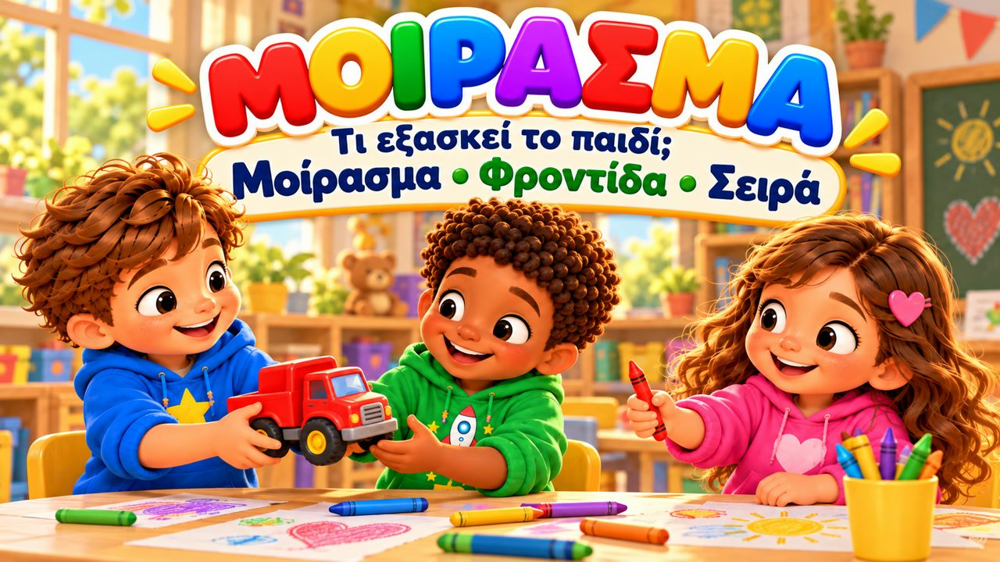
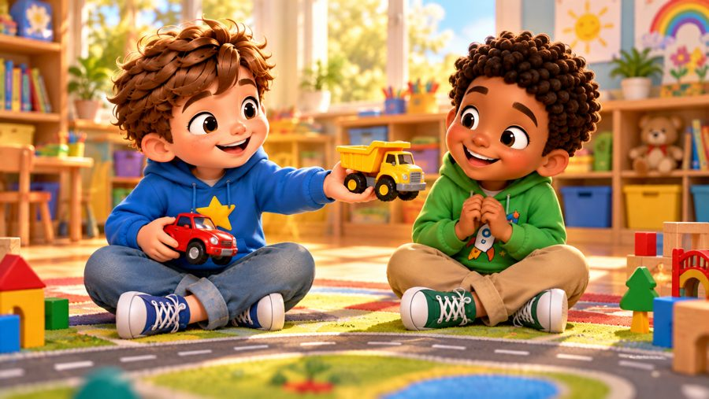
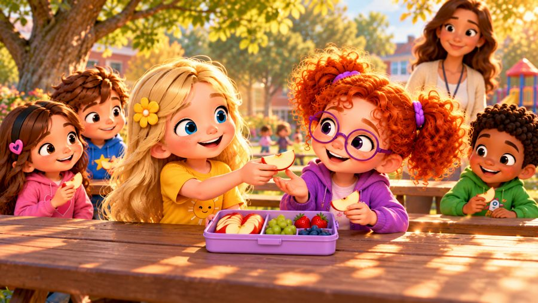
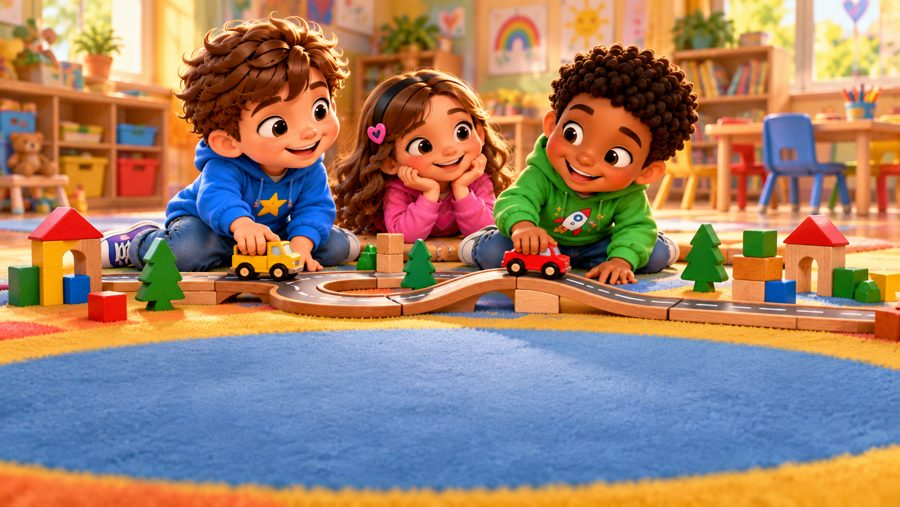
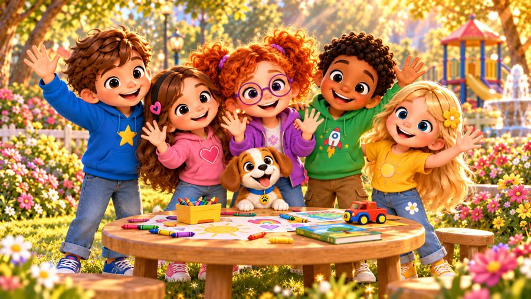

Όταν Μοιραζόμαστε, Χαιρόμαστε
Ένα τραγούδι για το μοίρασμα, τη σειρά και τον σεβασμό όταν ο φίλος μας παίζει ακόμα.
Δραστηριότητες, ζωγραφιές, κουίζ και πτυχίο θα εμφανιστούν μαζί με το βίντεο.

▶💡 Γιατί είναι σημαντικό: Μοίρασμα & Ευγενικά Όρια
Το μοίρασμα βοηθά τα παιδιά να κάνουν φίλους, να παίζουν μαζί περισσότερο και να νιώθουν μέλη μιας ομάδας. Περιλαμβάνει όμως και ευγενικά όρια: το παιδί μπορεί να δώσει σειρά, να μοιραστεί λίγο ή να πει ευγενικά «Το χρησιμοποιώ ακόμα». Επαινέστε τις γενναιόδωρες στιγμές και βοηθήστε το να βρίσκει δίκαιες λύσεις, όπως να παίρνουν σειρά ή να παίζουν μαζί.
👨👩👧 Τι μαθαίνει το παιδί
- Προσφέρουμε όταν υπάρχει αρκετό
- Παίρνουμε σειρά ή παίζουμε μαζί
- Σεβόμαστε τα όρια του άλλου
💬 Κουβέντα μετά το τραγούδι
- Τι μπορείς να προσφέρεις σε έναν φίλο;
- Τι λες όταν παίζεις ακόμα με ένα παιχνίδι;
- Πώς βλέπουν πέντε φίλοι ένα βιβλίο;
🏅 Κουίζ & Πτυχίο
Είδατε το τραγούδι μαζί; Τώρα διαβάστε στο παιδί κάθε ερώτηση — το παιδί δείχνει τη σωστή εικόνα. Αν απαντήσει και στις 6 ερωτήσεις, κερδίζει ένα πτυχίο για εκτύπωση!
🔒 Το όνομα χρησιμοποιείται μόνο για να φτιαχτεί το πτυχίο στη συσκευή σας. Δεν αποθηκεύουμε και δεν στέλνουμε τίποτα.
Τα κατάφερες! 🎉
Και οι 6 απαντήσεις είναι σωστές! Γράψτε το όνομα του παιδιού για να φτιαχτεί το πτυχίο.
🖨️ Δωρεάν εκτυπώσιμα
Δωρεάν για χρήση στο σπίτι και στην τάξη. Εκτυπώστε σε χαρτί Α4.
🖼️ Σκηνές από το τραγούδι






🎵 Κι άλλα τραγούδια


🎤 Στίχοι – Όταν Μοιραζόμαστε, Χαιρόμαστε
[Intro]
Έχω κάτι εγώ,
έχεις κάτι κι εσύ.
Μήπως γίνεται παρέα
να χαρούμε πιο πολύ;
Λίγο εγώ,
λίγο εσύ...
Κι όταν μοιραζόμαστε,
η χαρά μεγαλώνει στη στιγμή!
[Verse 1]
Η Μία έφερε μπογιές
και τις άπλωσε μπροστά.
Κόκκινο και κίτρινο,
πράσινο, πορτοκαλί πολλά.
Η Ρόζι έψαχνε το μπλε,
μα δεν το έβρισκε πουθενά.
Η Μία τότε χαμογέλασε:
«Έχω εγώ!
Ζωγράφισε κι εσύ μετά!»
Έφτιαξαν λουλούδια,
ουρανό και ζωγραφιές,
πεταλούδες, ουράνια τόξα
και πολύχρωμες γραμμές.
Μια κασετίνα με μπογιές,
δυο φίλες με χαρά...
Όταν κάτι μοιραζόμαστε,
το παιχνίδι γίνεται πιο ωραία!
[Pre-Chorus]
Μοιράζομαι,
περιμένω τη σειρά.
Βρίσκουμε έναν τρόπο
να περνάμε όμορφα.
Αν μπορούμε
να χαρούμε κι οι δυο,
λίγο δίνω,
λίγο παίρνω...
και χαμογελώ!
[Chorus]
Όταν μοιραζόμαστε,
χαιρόμαστε μαζί!
Λίγο τώρα η σειρά σου,
λίγο αργότερα η δική μου θα 'ρθει!
Μοιραζόμαστε μπογιές!
Μοιραζόμαστε παιχνίδι!
Κι όταν παίζουμε παρέα,
η χαρά μας μεγαλώνει ήδη!
Μοιράζομαι!
Νοιάζομαι!
Βρίσκω τρόπο
να παίξουμε μαζί!
Εγώ κι εσύ,
δίπλα δίπλα...
κι η χαρά μεγαλώνει στη στιγμή!
[Verse 2]
Ο Μαξ είχε το αμαξάκι
που αγαπούσε πιο πολύ.
Ο Τζέι ήρθε και του είπε:
«Μπορώ να παίξω κι εγώ μ' αυτό λιγάκι;»
Ο Μαξ το κράτησε κοντά του:
«Παίζω τώρα εγώ μ' αυτό.»
Μα μετά σκέφτηκε έναν τρόπο
που να είναι καλός και για τους δυο.
«Πάρε εσύ το φορτηγό,
κι όταν τελειώσω θα στο δώσω.
Θα παίξεις τότε με το αμάξι,
κι εγώ τον δρόμο θα τελειώσω!»
Ο Τζέι είπε:
«Μια χαρά!»
Και ξεκίνησαν μαζί.
Δεν χρειάστηκε να μαλώσουν,
ούτε να τραβούν το ίδιο παιχνίδι.
Γιατί μοίρασμα δεν σημαίνει
«δώσ' το τώρα στη στιγμή».
Μπορώ να πω:
«Μόλις τελειώσω,
θα έρθει και η δική σου σειρά.»
[Pre-Chorus]
Μοιράζομαι,
περιμένω τη σειρά.
Βρίσκουμε έναν τρόπο
να περνάμε όμορφα.
Αν είναι ένα
και το θέλουμε κι οι δυο,
παίρνουμε σειρά
και βρίσκουμε τρόπο σωστό!
[Chorus]
Όταν μοιραζόμαστε,
χαιρόμαστε μαζί!
Λίγο τώρα η σειρά σου,
λίγο αργότερα η δική μου θα 'ρθει!
Μοιραζόμαστε μπογιές!
Μοιραζόμαστε παιχνίδι!
Κι όταν παίζουμε παρέα,
η χαρά μας μεγαλώνει ήδη!
Μοιράζομαι!
Νοιάζομαι!
Βρίσκω τρόπο
να παίξουμε μαζί!
Εγώ κι εσύ,
δίπλα δίπλα...
κι η χαρά μεγαλώνει στη στιγμή!
[Verse 3]
Η Λίλι είχε στο κουτάκι
φέτες μήλου αρκετές.
Είδε τη Ρόζι δίχως σνακ
κι είπε λόγια τρυφερά:
«Έχω αρκετές για μένα.
Θέλεις λίγες κι εσύ;»
Η Ρόζι είπε:
«Σ' ευχαριστώ!»
Και χαμογέλασαν μαζί.
Αργότερα ο Τζέι κρατούσε
ένα βιβλίο ζωγραφιστό,
μα πέντε φίλοι ήθελαν
να δουν το ίδιο στο λεπτό.
Κάθισαν λοιπόν σε κύκλο,
όλοι δίπλα στο χαλί,
κι άλλαζαν τις σελίδες
μία μία στη σειρά.
Άλλοτε μοιράζουμε κάτι,
άλλοτε παίρνουμε σειρά.
Κι άλλοτε το απολαμβάνουμε
όλοι μαζί σαν μια παρέα!
[Bridge - Call and Response]
Έχεις πολλές μπογιές;
ΜΟΙΡΑΖΟΜΑΙ!
Έχουμε μόνο ένα παιχνίδι;
ΠΑΙΡΝΟΥΜΕ ΣΕΙΡΑ!
Παίζω ακόμα μ' αυτό;
«ΜΟΛΙΣ ΤΕΛΕΙΩΣΩ!»
Έχω αρκετό και για φίλο;
ΠΡΟΣΦΕΡΩ!
Μπορούμε να παίξουμε μαζί;
ΦΥΣΙΚΑ!
Πρέπει να δίνω ό,τι έχω;
ΟΧΙ!
Μπορώ να βρω μια δίκαιη λύση;
ΝΑΙ!
Και τι μεγαλώνει όταν μοιραζόμαστε;
Η ΧΑΡΑ!
[Break]
Το μοίρασμα είναι όμορφο.
Μα δεν σημαίνει
πως πρέπει να δίνω
ό,τι έχω κάθε στιγμή.
Μπορώ να πω:
«Παίζω ακόμα μ' αυτό.»
Μπορώ να πω:
«Μετά είναι η σειρά σου.»
Μπορώ να προτείνω
ένα άλλο παιχνίδι.
Ή να βρούμε τρόπο
να παίξουμε μαζί.
Γιατί όταν ακούμε
και σεβόμαστε ο ένας τον άλλο...
το μοίρασμα γίνεται χαρά.
[Final Chorus]
Όταν μοιραζόμαστε,
χαιρόμαστε μαζί!
Λίγο τώρα η σειρά σου,
λίγο αργότερα η δική μου θα 'ρθει!
Μια μπογιά!
Ένα παιχνίδι!
Μια ιστορία στο χαλί!
Ένα σνακ!
Μια καλή πράξη!
Και χαμόγελα μαζί!
Περιμένω!
Μοιράζομαι!
Παίζω και συνεργάζομαι!
Κι αν υπάρχει μόνο ένα,
τη σειρά σου τη θυμάμαι!
Εγώ κι εσύ,
χέρι χέρι...
βρίσκουμε μια λύση που μας φέρνει πιο κοντά!
ΜΟΙΡΑΖΟΜΑΙ!
ΝΟΙΑΖΟΜΑΙ!
ΠΕΡΙΜΕΝΩ ΤΗ ΣΕΙΡΑ!
Κι όταν παίζουμε μαζί...
μεγαλώνει η χαρά!
[Outro]
Λίγο εγώ...
λίγο εσύ...
ή περιμένεις
ώσπου να έρθει η σειρά σου κι εσύ.
Με καλοσύνη.
Με χαρά.
Όταν μοιραζόμαστε...
περνάμε πιο καλά!